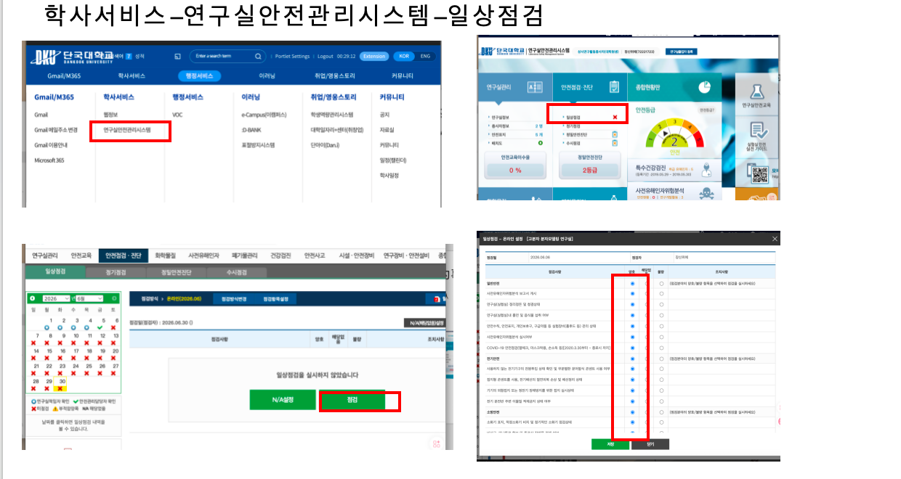

실험실 안전관리 및 안전점검 안내
이 페이지는 실험실 안전관리, 매월 안전점검, 안전교육 이수, 관련 서류 제출 및 개선조치 방법을 정리한 문서입니다.
실험실 안전관리는 매월 또는 매 학기마다 반복적으로 확인해야 하므로, 아래 내용을 참고하여 누락되는 항목이 없도록 관리합니다.
1. 실험실 안전관리 기본사항
실험실 관리 시 기본적으로 아래 사항을 주기적으로 확인해야 합니다.
| 구분 | 내용 | 시기 |
|---|---|---|
| 일상점검 | 실험실 안전점검 실시 | 매월 |
| 안전교육 | 연구실 안전교육 이수 | 매 학기 3월, 9월 |
| 이수증명서 제출 | 안전교육 이수 후 이수증명서 저장 및 제출 | 교육 이수 후 |
| 안전관리 자료 제출 | 점검표, 연구개발활동표, 유해인자 관련 자료 등 제출 및 보관 | 필요 시 / 정기적으로 |
| 개선조치 | 지적사항 수정 후 개선 사진 업로드 및 조치 내용 작성 | 점검 후 |
!!! warning "주의" 연구실 안전교육은 매 학기 3월과 9월에 반드시 이수해야 하며, 이수 후에는 이수증명서를 저장하고 필요 시 제출해야 합니다.
2. 안전점검 위치
실험실 안전점검은 학교 안전관리시스템에서 진행합니다.
접속 위치는 아래와 같습니다.
학사서비스 → 연구실안전관리시스템 → 일상점검
아래 이미지는 연구실안전관리시스템의 일상점검 위치를 확인하기 위한 참고 자료입니다.

3. 실험실 안전관리에서 자주 발생하는 문제 및 대응방법
아래 항목들은 실험실 안전점검에서 자주 확인되거나 지적될 수 있는 문제입니다.
정기점검 전후로 반드시 확인하는 것이 좋습니다.
3.1 전기배선 정리 문제
두 실험실 모두 바닥에 전선이 방치되어 있으면 안 됩니다.
바닥이나 통로에 전선이 있으면 넘어짐, 감전, 장비 손상 등의 위험이 있습니다.
자주 발생하는 문제
- 실험실 바닥에 전선이 길게 노출되어 있음
- 통로에 멀티탭이나 전원선이 놓여 있음
- 장비 뒤쪽 전선이 엉켜 있음
- 사용하지 않는 전선이 정리되지 않음
대응방법
- 바닥에 있는 전선은 벽면이나 책상 아래쪽으로 정리합니다.
- 통로를 지나가는 전선은 없도록 정리합니다.
- 멀티탭은 바닥에 방치하지 않고 안전한 위치에 고정합니다.
- 손상된 전선이나 오래된 멀티탭은 교체합니다.
- 장비 사용 후 전원선 상태를 확인합니다.
3.2 안전관리 자료함 정리
실험실 입구 쪽 안전관리 자료함에는 필요한 안전 관련 자료를 정리해서 보관해야 합니다.
자료함에 넣어야 하는 자료 예시
- 실험실 안전점검표
- 연구개발활동표
- 연구실 안전교육 관련 자료
- 이수증명서 관련 자료
- 비상연락망
- 안전관리 안내문
- 기타 학교에서 요구하는 안전 관련 서류
자주 발생하는 문제
- 자료함 안에 필요한 서류가 없음
- 오래된 자료가 그대로 보관되어 있음
- 점검표나 연구개발활동표가 최신 상태가 아님
- 필요한 자료가 흩어져 있어서 점검 시 바로 찾기 어려움
대응방법
- 안전관리 자료함에 필요한 서류를 정리해서 넣어둡니다.
- 오래된 자료는 정리하고 최신 자료로 교체합니다.
- 점검표, 연구개발활동표, 교육 관련 자료는 한곳에 모아둡니다.
- 정기점검 전 자료함을 다시 확인합니다.
3.3 위험약품 및 주의약품 표시
위험성이 있거나 주의가 필요한 약품은 시약장 또는 시약 선반 근처에 주의 표시를 부착해야 합니다.
자주 발생하는 문제
- 위험약품 주변에 주의 라벨이 없음
- 시약병 라벨이 오래되어 잘 보이지 않음
- 약품명, 사용자, 제조일, 위험성 정보가 누락됨
- 유해성이 있는 약품인데 별도 표시 없이 보관됨
대응방법
- 위험약품 또는 주의약품 주변에 주의 라벨을 부착합니다.
- 시약병에는 약품명, 사용자, 제조일, 보관 조건, 위험성 등을 표시합니다.
- 라벨이 훼손되었거나 정보가 부족한 경우 다시 작성합니다.
- 위험성이 큰 약품은 따로 구분하여 보관합니다.
- 필요한 경우 GHS 경고표지를 함께 부착합니다.
3.4 폐기 대상 약품 정리
오래 사용하지 않거나 폐기해야 하는 약품은 정기적으로 확인하고 정리해야 합니다.
자주 발생하는 문제
- 장기간 사용하지 않은 약품이 그대로 보관되어 있음
- 내용물이 불분명한 시료가 있음
- 오래된 시약병이나 변질 가능성이 있는 약품이 있음
- 폐기 대상 약품이 일반 시약과 함께 보관됨
대응방법
- 오래 사용하지 않은 약품을 정기적으로 확인합니다.
- 폐기 대상 약품은 따로 분류합니다.
- 내용물이 불분명한 시료는 임의로 사용하지 않습니다.
- 변색, 침전, 냄새 변화, 용기 파손 등이 있는 경우 담당자에게 알립니다.
- 폐기 전까지는 지정된 위치에 분리 보관합니다.
- 학교의 화학폐기물 처리 절차에 따라 반출 또는 폐기합니다.
!!! warning "주의" 화학약품은 임의로 싱크대에 버리면 안 됩니다. 반드시 학교의 폐기물 처리 절차를 따라야 합니다.
3.5 연구개발활동표 작성
연구개발활동표는 정기적으로 작성해야 하며, 필요한 경우 지도교수님의 확인이 필요합니다.
자주 발생하는 문제
- 연구기간이 만료되었는데 수정하지 않음
- 참여 연구활동종사자가 최신 상태로 등록되어 있지 않음
- 현재 실험실에서 사용하는 장비나 시약이 반영되어 있지 않음
- 연구내용이 실제 연구활동과 맞지 않음
- 교수님 확인이 필요한데 확인 절차가 완료되지 않음
대응방법
- 연구기간을 정기적으로 확인합니다.
- 참여 연구활동종사자 명단을 최신 상태로 유지합니다.
- 연구내용, 사용 장비, 사용 시약, 유해인자 정보를 현재 상황에 맞게 수정합니다.
- 작성 후 지도교수님 또는 연구실 책임자 확인이 필요한 경우 확인을 요청합니다.
3.6 유해인자 및 약품표 작성
실험실에서 사용하는 유해인자와 약품 관련 표는 정확히 작성해야 합니다.
자주 발생하는 문제
- 실제 사용하는 약품이 표에 누락되어 있음
- 더 이상 사용하지 않는 약품이 그대로 남아 있음
- 보호구, 보관 방법, 주의사항이 충분히 작성되어 있지 않음
- 장비 사용과 관련된 위험요인이 반영되어 있지 않음
대응방법
- 현재 실험실에서 사용하는 약품과 장비를 기준으로 유해인자 정보를 작성합니다.
- 사용하지 않는 약품은 목록에서 정리하거나 폐기 여부를 확인합니다.
- 보호구, 보관 방법, 주의사항을 함께 작성합니다.
- 약품이나 장비가 변경되면 표도 함께 수정합니다.
3.7 실험실 음식물 정리
실험실 내 음식물 보관 및 섭취는 가능한 한 피해야 합니다.
시약, 시료, 장비가 있는 공간에 음식물이 있으면 오염 및 안전사고 위험이 있습니다.
자주 발생하는 문제
- 실험대 위에 음식물이 놓여 있음
- 시약장 또는 장비 주변에 음료나 간식이 있음
- 오래된 음식물이 방치되어 있음
- 공용 공간이 정리되지 않음
대응방법
- 실험실 내 음식물은 즉시 정리합니다.
- 오래된 음식물은 폐기합니다.
- 시약장, 장비 주변, 실험대 위에는 음식물을 두지 않습니다.
- 실험 공간과 음식물 보관 공간을 분리합니다.
4. 개선조치 방법
안전점검 후 지적사항이 있는 경우, 문제를 수정한 뒤 안전관리시스템에 개선조치 내용을 입력하고 개선 사진을 업로드해야 합니다.
개선조치 순서는 아래와 같습니다.
- 안전점검 결과에서 지적사항 확인
- 해당 문제 수정
- 개선 후 사진 촬영
- 연구실안전관리시스템 접속
- 개선 사진 업로드
- 개선조치 내용 작성
- 저장
- 필요한 경우 연구실 책임자 또는 지도교수님 확인
개선조치 작성 예시
지적된 사항을 확인한 후 해당 내용을 정리 및 보완하였습니다. 개선 후 사진을 첨부하였으며, 향후 동일한 문제가 발생하지 않도록 정기적으로 확인하겠습니다.
전기배선 정리 개선조치 예시
실험실 바닥 및 장비 주변에 노출되어 있던 전선을 정리하였습니다. 통행 및 장비 사용에 방해가 되지 않도록 정리하였으며, 향후 정기적으로 확인하겠습니다.
위험약품 라벨 보완 개선조치 예시
주의가 필요한 약품 주변에 안전표지를 부착하였으며, 시약 라벨과 보관 상태를 확인하였습니다. 향후 위험약품은 별도로 관리하고 정기적으로 점검하겠습니다.
폐기 대상 약품 정리 개선조치 예시
장기간 사용하지 않은 약품을 확인하여 폐기 대상 물질을 분류하였습니다. 학교 화학폐기물 처리 절차에 따라 반출 또는 폐기할 예정이며, 처리 전까지는 지정된 위치에 분리 보관하겠습니다.
안전관리 자료함 정리 개선조치 예시
실험실 입구 안전관리 자료함에 필요한 점검표 및 관련 서류를 정리하여 보관하였습니다. 향후 점검 시 필요한 자료를 바로 확인할 수 있도록 정기적으로 관리하겠습니다.
5. 안전점검 체크리스트
정기점검 전 아래 항목을 확인합니다.
- [ ] 매월 일상점검 실시
- [ ] 매 학기 3월, 9월 안전교육 이수
- [ ] 이수증명서 저장 및 제출
- [ ] 안전관리 자료함 정리
- [ ] 실험실 전기배선 정리
- [ ] 위험약품 주의 라벨 부착
- [ ] 폐기 대상 약품 정리
- [ ] 연구개발활동표 작성
- [ ] 지도교수님 또는 책임자 확인 필요 여부 확인
- [ ] 유해인자 및 약품표 작성
- [ ] 실험실 음식물 정리
- [ ] 개선조치 사진 업로드
- [ ] 개선조치 내용 작성 및 저장